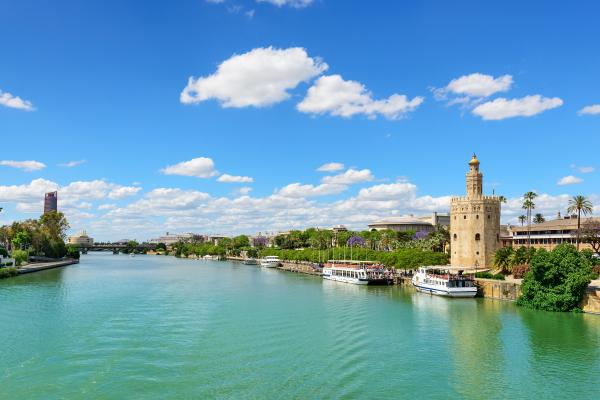

Introducción
El río Guadalquivir es uno de los ríos más importantes de España. Su nombre proviene del árabe "al-wadi al-kabir", que significa "el gran río". Atraviesa Andalucía y es el quinto río más largo de la península ibérica, con una longitud de aproximadamente 657 kilómetros.

Curso del Río
El Guadalquivir nace en la Sierra de Cazorla, en la provincia de Jaén, y desemboca en el océano Atlántico, en Sanlúcar de Barrameda. A lo largo de su recorrido, pasa por importantes ciudades andaluzas como Córdoba y Sevilla.
Importancia Histórica
El río Guadalquivir ha tenido una gran importancia a lo largo de la historia de España. En la época romana, era navegable hasta Córdoba y fue una vía de comunicación vital. Durante la Edad Media, Sevilla se convirtió en un puerto clave gracias a su conexión con el Guadalquivir.
Flora y Fauna
El río y sus alrededores albergan una gran biodiversidad. En sus aguas y riberas se pueden encontrar numerosas especies de aves, peces y plantas, muchas de ellas protegidas. Los humedales del Parque Nacional de Doñana, situado en su desembocadura, son uno de los ecosistemas más importantes de Europa.
Turismo y Actividades
El Guadalquivir es un atractivo turístico muy importante. Los visitantes pueden disfrutar de paseos en barco por el río, especialmente en las ciudades de Sevilla y Córdoba. Además, es un lugar ideal para la práctica de deportes acuáticos y actividades al aire libre.